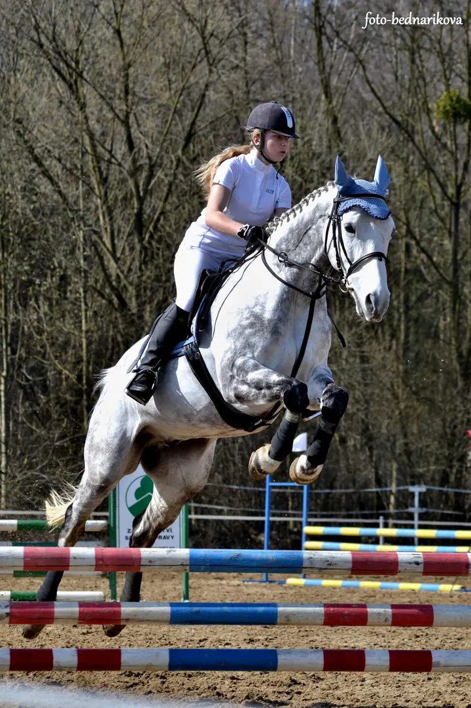
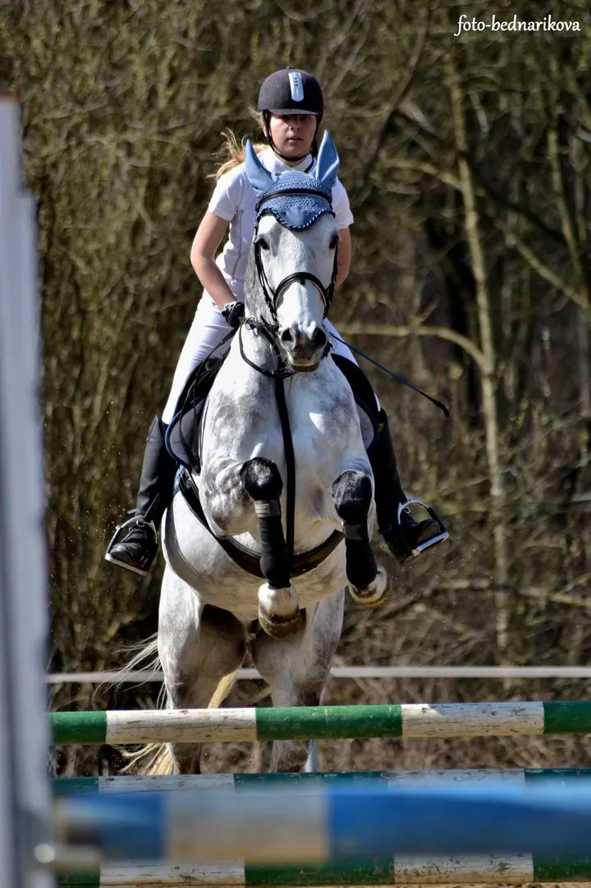
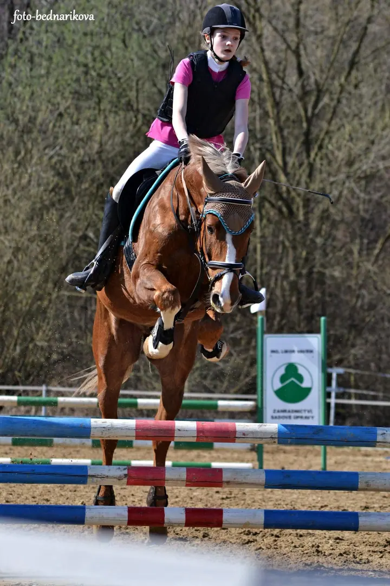
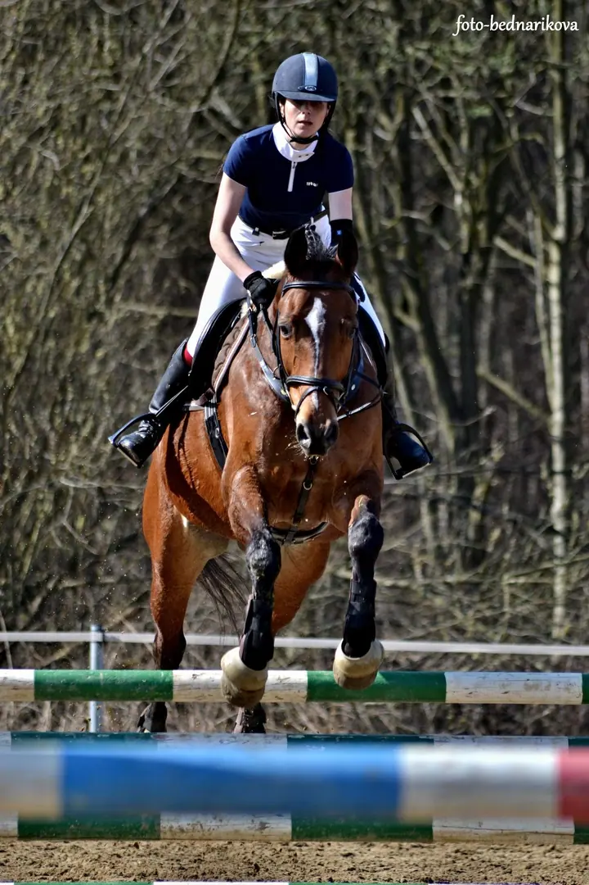
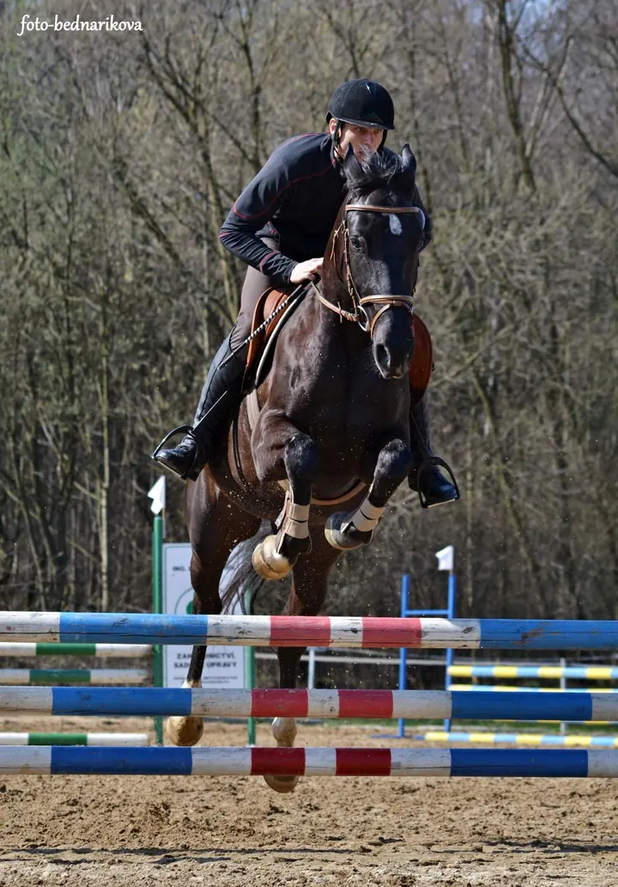

01 / 01
Focení na parkurových závodech
Na závodech vás nafotím ve skoku i na opracovišti. Stačí mi předem napsat na e-mail nebo do zpráv na Facebooku.
Zeptat se na termín→





Parkur, koně a vteřina nad překážkou
Zeptat se na termín →(01) Ahoj
Jmenuji se Adéla Bednaříková a jsem amatérská fotografka ze Žabně . Nejčastěji mě potkáte na parkurových závodech , kde fotím koně a jezdce ve chvíli skoku . Fotky z akcí pak najdete v mých galeriích na Rajčeti.
(02) Co fotím
01 / 01
Na závodech vás nafotím ve skoku i na opracovišti. Stačí mi předem napsat na e-mail nebo do zpráv na Facebooku.
Zeptat se na termín→(04) Postup
Od první zprávy po hotovou galerii.
Krok 1 z 4
Ozvěte se e-mailem nebo do zpráv na Facebooku a napište, na kterých závodech pojedete.
Krok 2 z 4
Upřesníme, kdy startujete a jaké fotky chcete. Cenu vám ráda pošlu.
Krok 3 z 4
Fotím od kolbiště, abych vás zachytila ve skoku i na parkuru.
Krok 4 z 4
Vybrané a upravené fotky z akce najdete v galerii na Rajčeti.
Jeden skok, jedna vteřina nad překážkou.
(05) Za objektivem
Jsem amatérská fotografka ze Žabně. Moje fotky vznikají hlavně na parkurových závodech, u kolbiště, odkud je dobře vidět každý skok.
Na webu najdete, na kterých akcích a místech mě potkáte, a fotky ze závodů dávám do galerií na Rajčeti. Vybrané snímky mám i na 500px.
Mám jednu prosbu: když budete moje fotky sdílet na sociálních sítích nebo jinde, uveďte pod ně prosím moje jméno nebo odkaz na Rajče. Děkuji.
Adéla
Adéla Bednaříková · Fotografka parkurových závodů
Stačí mi napsat na e-mail nebo do zpráv na Facebooku, na které závody jedete. Domluvíme se na podrobnostech.
Cenu vám ráda pošlu. Napište mi, o jaké závody a kolik startů jde.
Fotky z akcí dávám do galerií na Rajčeti, vybrané snímky jsou i na 500px.
Ano, jen pod ně prosím uveďte moje jméno nebo odkaz na Rajče. Fotky jsou chráněné autorským právem.
(07) Kontakt
Napište pár vět o tom, co si představujete, a termín, který se vám hodí.